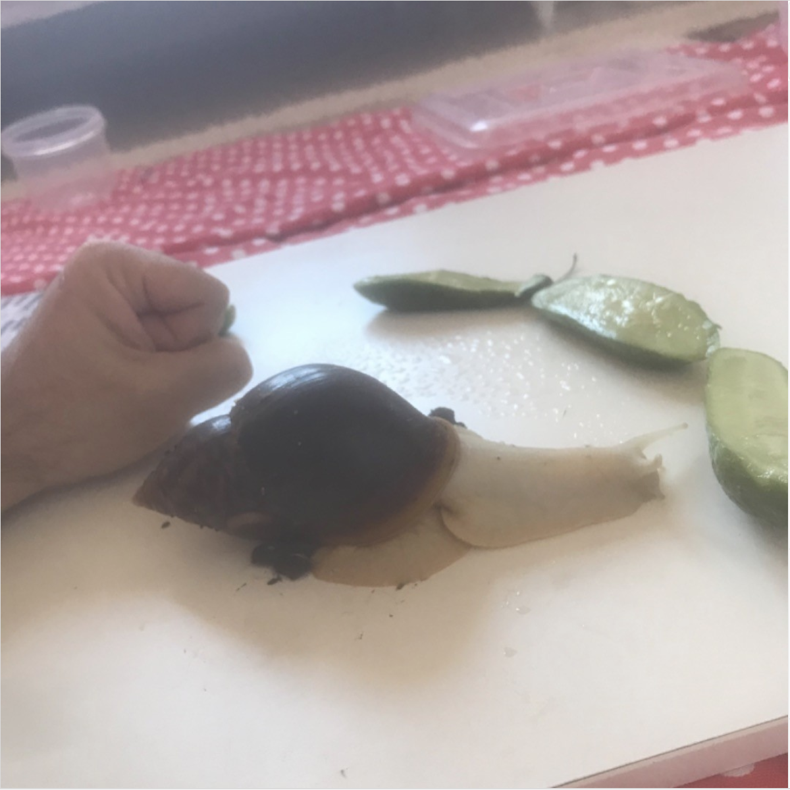

Bir Evcil Hayvan Olarak Neden Salyangoz Seçtim?
Eskiden beri hayvanlarla aram iyidir, kedileri de çok severim. Eşim de sever aslında ancak kedi fobisi var. Ben de akmaz kokmaz bir hayvan almak istedim eve zira evde işimiz çok. Anne baba çalışıyoruz, çocuk küçük zor yetişiyoruz evimize ve işimize. Araştırmalarım sonucunda Salyangoz bakmaya karar verdik. Avantajları şöyle:

- Tuvalete gitmesi için sokak sokak gezmek, eve geldi diye patilerini temizlemek yok.
- Aşı, ameliyat, diş bakımı gibi detleri yok.
- Tuvaletini oraya buraya yaptı, kumu bitti talaşı bitti gibi bir derdi yok.
- Evde çıkan artık malzemeler ile (salatalık, domates, marul, roka, yumurta kabuğu) ile besleniyor. Önemli olan malzemenin zirai ilaçlı, tuzlu ya da asidik (limonlu sirkeli vs) olmaması.
- Çok yoğun bir döneme girdiniz, ya da tatile çıktınız. Hayvan çok kuru bir yerde değilse ve yetişkinse kendini kış uykusu moduna alıyor bir kaç hafta sıfır bakım ile kendini idare ediyor.
- Kaçtı göçtü bulamadık çaldılar gibi bir derdi yok. Dakikada 10cm falan gidebiliyorlar.
- Sadece delikli bir kutuya, arada bir nemlendirilmeye (çiçek fısfısı), biraz üzerinde gezebilecek toprağa, ve tedirgin hissettiğinde saklanabilecek bir yere ihtiyacı var. Bunların hepsi evdeki malzemelerden halledilebiliyor.
- Bahçe salyangozları sonbaharda çalılıkların arasından bulunabiliyor ya da 50-60 liraya aşırı büyüyen afrika salyangozlarından satın alabiliyorsunuz.
Bu da benim arkadaş, daha ne kadar büyüyecek bilmiyorum.

Salyangoz bakımı ile ilgili soru varsa yorumlara yazabilirsiniz. Bir sonraki yazıda görüşmek üzere.